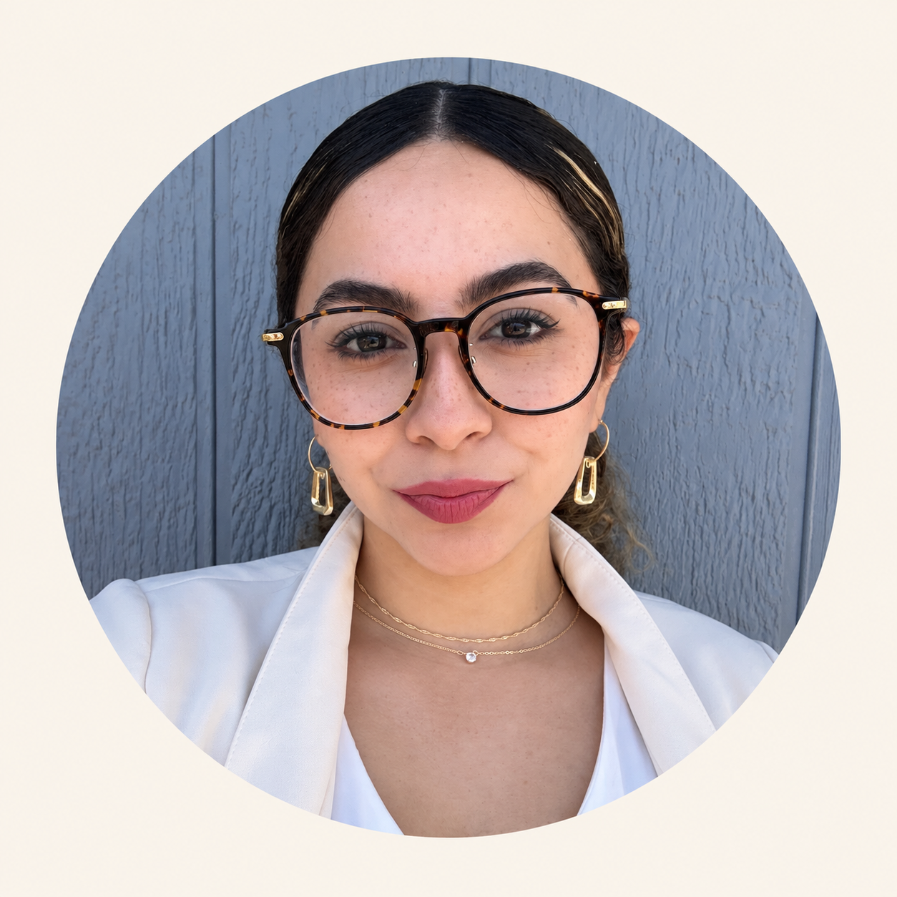

Operations • Analytics • Strategy
Dayanara
Palestina
Systems & Operations Management and Business Analytics student at California State University, Northridge. Curious about what makes organizations work and how they can work better.

A little about me
I’ve always been naturally curious about how businesses work behind the scenes, why some things run smoothly, why others don’t, and what could be changed to make them better.
That curiosity is a big reason I chose to study Systems & Operations Management and Business Analytics at CSUN. I’m especially interested in process optimization, quality, forecasting, and using data to make better decisions. What I like most is looking at a problem from both sides, understanding what the numbers are saying, but also thinking about the people and processes behind them.
Through work, school, and being part of different teams, I’ve learned that strong operations are not just about being efficient. They also come down to communication, trust, being adaptable, and knowing when to step up. That has shaped the kind of teammate and future leader I want to be, someone who is dependable, curious, easy to work with, and always willing to learn.
Long term, I want to build a career where I can work on real business problems, help improve how organizations operate, and eventually be part of bigger decisions around strategy, growth, and performance. I want to keep building the technical side of analytics and operations, but I also want to become someone people trust to communicate clearly, lead well, and actually get things moving.
I’m still early in my career, but I’m serious about where I want to go. I want opportunities where I can learn from strong teams, take on real responsibility, and keep growing into someone who understands a business deeply and can help make it better.
What interests me
The problems I want to understand.
Process Optimization
Understanding where processes slow down, why bottlenecks happen, and how systems can be designed to work more smoothly.
Quality
Exploring how organizations maintain consistency while balancing customer expectations, people, resources, and performance.
Forecasting
Using patterns and data to better understand demand, prepare for what comes next, and support stronger business decisions.
Skills & interests
Tools I’m building.
Where I want to grow.
Selected work
Learning by doing.
An upcoming case study exploring how operational decisions, bottlenecks, workflow, and demand affect business performance.
An upcoming data project focused on turning raw information into clear insights and practical business recommendations.
Let’s connect
I’m always open to learning from new people and new opportunities.
Thanks for stopping by. I’d love to stay connected.